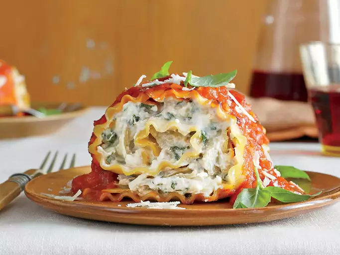

Lasagna Roll Ups

Description
The most delicious lasagna you'll have, rolled up!
Layered with pasta, cheese, and the ground meats of your
choice, this dish will not dissapoint.
Ingredients:
- 1lb. ground beef
- 1/4 white onion, chopped
- 1/2 tsp garlic powder
- 1/2 tsp dried oregano
- 1 (26oz) jar chunky tomato sauce
- 3 tbsp white sugar
- 18 lasagna noodles
- cooking spray (olive oil = healthy)
- 1 (15oz) ricotta cheese
- 1 large egg, beaten
- 2 tbsp fresh parsley, chopped
- 1 cup grated parmesan cheese, divided
- 1 (12oz) package shredded mozzarella cheese, or as needed
Directions:
- Cook and stir ground beef, onion, garlic powder, and
oregano in a large skillet over medium heat until
onion is tender and beef is browned, about 10 minutes.
Add tomato sauce and sugar; simmer until sauce is
heated through, about 10 minutes.
- Bring a large pot of lightly salted water to a boil.
Cook lasagna in the boiling water, stirring occasionally
until cooked through but firm to the bite, 8 to 10 minutes.
Drain.
- Preheat the oven to 375 degrees F (190 degrees C).
Grease a 9x13-inch casserole dish.
- Mix ricotta cheese, egg, parsley, and 3/4 cup
Parmesan cheese together in a bowl.
- Place a lasagna noodle on a work surface. Spoon
one layer ricotta cheese mixture, one layer meat
sauce, and one layer mozzarella cheese atop lasagna
noodle; top with another lasagna noodle. Roll up the
stuffed lasagna noodles in the jelly-roll style;
place in the prepared casserole dish. Repeat with
remaining lasagna noodles, ricotta cheese mixture,
meat sauce, and mozzarella cheese. Spread a spoonful
of meat sauce atop each lasagna roll; top with
remaining mozzarella cheese and 1/4 cup Parmesan
cheese.
- Bake in the preheated oven until cheese is melted
and bubbling, 30 to 35 minutes.